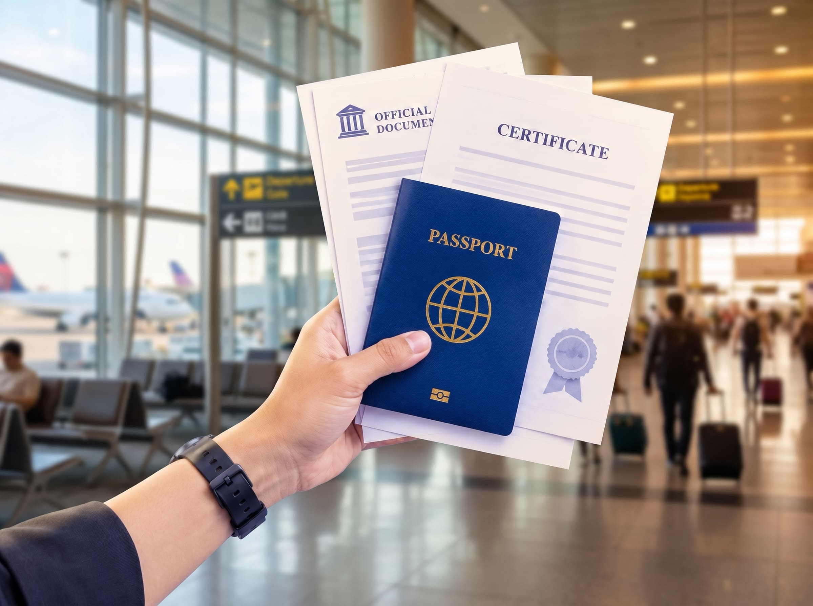

Legalisasi Apostille
Pengesahan dokumen publik Indonesia agar diakui di negara anggota Konvensi Apostille, seperti ijazah, akta kelahiran, akta nikah, dan akta notaris.
Legalisasi apostille, terjemah resmi, dan terjemah tersumpah untuk visa, studi, kerja, pernikahan, dan bisnis di luar negeri.
Lihat Layanan ↗
Dokumen Anda diurus rapi, resmi, dan tepat waktu. Kami membantu legalisasi apostille serta terjemah resmi dan tersumpah, dengan proses jelas dan harga transparan.
Pengesahan dokumen publik Indonesia agar diakui di negara anggota Konvensi Apostille, seperti ijazah, akta kelahiran, akta nikah, dan akta notaris.
Terjemahan akurat untuk kebutuhan umum dan bisnis, dikerjakan penerjemah berpengalaman dengan format rapi.
Terjemahan oleh penerjemah tersumpah, lengkap dengan pengesahan, untuk keperluan kedutaan, instansi pemerintah, pengadilan, dan universitas.
Ijazah, transkrip nilai, dan surat keterangan untuk pendaftaran studi atau beasiswa di luar negeri.
Akta lahir, akta nikah, kartu keluarga, dan surat keterangan untuk visa, imigrasi, dan keperluan keluarga.
Akta pendirian, kontrak, perjanjian, dan dokumen korporasi untuk kerja sama dan investasi lintas negara.
Butuh cepat? Kirim dokumen Anda, kami beri estimasi waktu dan biaya sebelum Anda setuju. *Waktu apostille mengikuti proses instansi.
Foto atau scan dokumen Anda lewat WhatsApp. Sebutkan negara tujuan dan kebutuhan Anda.
Kami konfirmasi jenis layanan, harga, dan estimasi waktu sebelum Anda setuju.
Dokumen dikerjakan dan dikirim ke Anda. Tersedia pengambilan langsung atau pengiriman.
Dikerjakan penerjemah berpengalaman dan tersumpah.
Pilihan express saat Anda dikejar tenggat.
Biaya diinformasikan di muka, tanpa biaya tersembunyi.
Data pribadi Anda kami perlakukan dengan aman.
“[Ganti dengan testimoni asli pelanggan 1.]”
“[Ganti dengan testimoni asli pelanggan 2.]”
“[Ganti dengan testimoni asli pelanggan 3.]”
Apostille adalah sertifikat pengesahan dokumen publik agar diakui di negara anggota Konvensi Apostille. Di Indonesia, layanan ini berlaku sejak 4 Juni 2022 dan diterbitkan oleh Kementerian Hukum melalui Ditjen AHU.
Terjemah tersumpah dikerjakan penerjemah yang telah disumpah dan disertai pengesahan penerjemah, biasa diminta instansi pemerintah, pengadilan, kedutaan, dan universitas. Terjemah resmi cocok untuk kebutuhan umum. Cek persyaratan instansi tujuan Anda, atau tanyakan kepada kami.
Banyak terjemahan dapat selesai dalam 24 jam, tergantung jumlah halaman dan bahasa. Waktu apostille mengikuti proses instansi. Kami memberi estimasi waktu dan biaya sebelum Anda menyetujui pesanan.
Apostille hanya berlaku di negara anggota Konvensi Apostille. Untuk negara non-anggota, biasanya diperlukan proses legalisasi lain. Beri tahu negara tujuan Anda dan kami bantu pastikan prosedurnya.
Kirim foto atau scan dokumen melalui WhatsApp, terima estimasi harga dan waktu, lalu setujui pesanan. Dokumen selesai dan dikirim ke Anda.